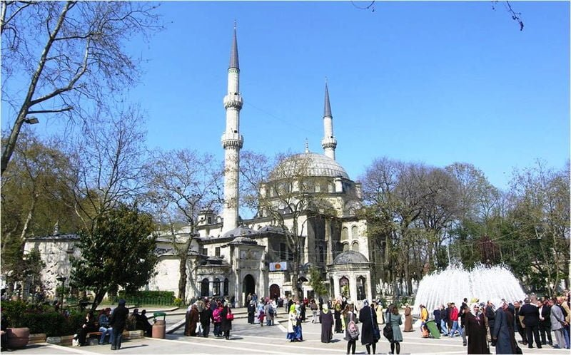
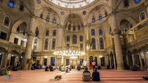
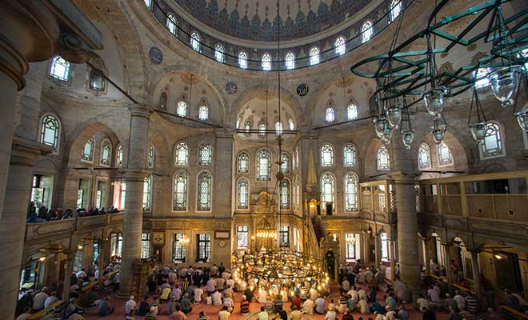
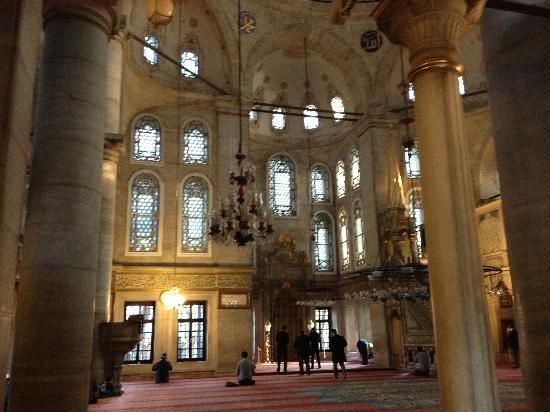
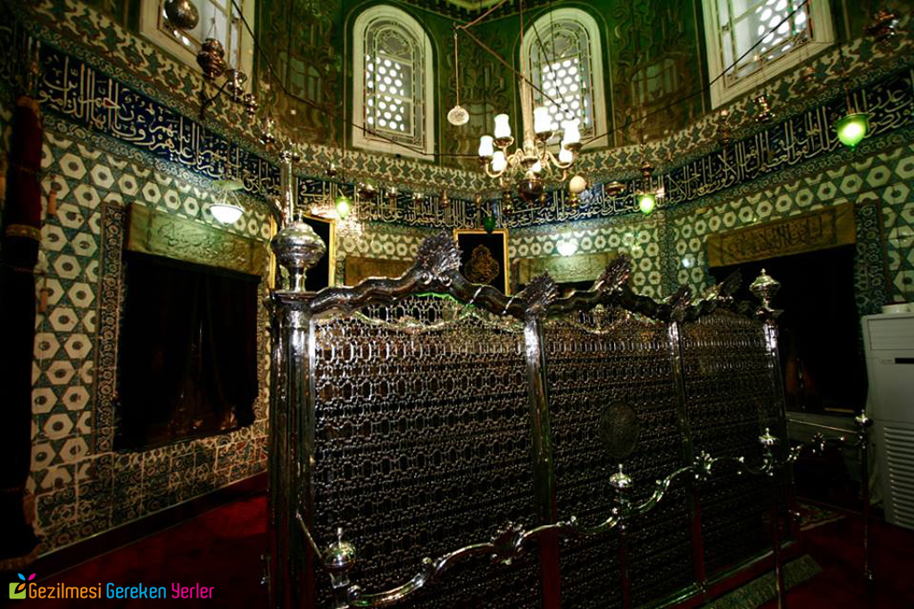
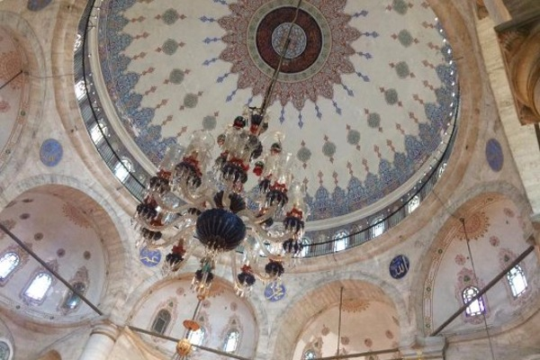
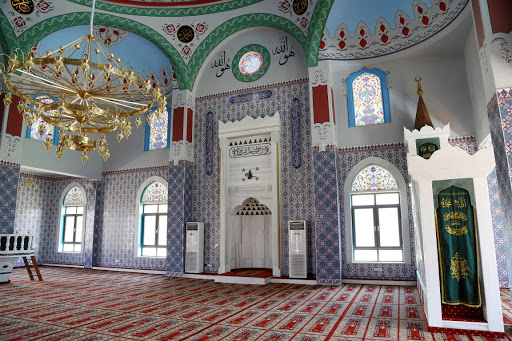

Eyüp Sultan Camii

AçıklamaHadikat'ül-Cevâmi'de şu açıklama bulunmaktadır: Yüce Tanrı'nın yardımı ile 857/1453'de Akşemseddin birlik ve himmetiyle bu güzel şehir Fâtih Sultan Mehmed Hân tarafından feth edildi. Bundan önce Emevilerden Muaviye döneminde 51 (M. 671) tarihinde İstanbul'un fethi için Zeyd bin Şerecet'tin Rehâvi'nin komutanlığında bir sefer düzenlendi. Gelen ga-zilerle birlikte 33 sahabe vardı.Sekiz kişinin en büyüğü ve saygı değerlisi olan Ebu Eyyub Ensari Halid bin Zeyd bu tarihte ishalden vefat etti ve şimdiki yere defn edildi. Bu tarihten İstanbul’un fethine gelinceye kadar 806 sene geçtikten sonra İstanbul’un feth edildiği sırada fieyh Akşemseddin Hazretlerinin kuvvet-i kudsiye ve kerameti ünsiyeleriyle yerini tayin eyledikleri mahall, kabr-i şerifleri olmak üzere kazılıp iki kulaç kadar inildikte bir taş çıkmıştır. Taşın üzerinde: Hazâ Kabr-i Ebi Eyyup, diye yazılı idi. Derhal bir türbe yapımına başlanmış ve hitamında bir cami'i şerif dahi ilave kılınmıştır. Halâ Eyyub Cami'i diye meşhurdur. Kapısı üzerindeki tarih budur:
Çün sekizyüz altmışüç şalinde bu Daha sonra padişahlar himmetiyle nice tamirat ve termimat ile hizmetler edildi. 136 (1724) tarihinde bütün selâtin camilerinde ramazanlarda mahyalar yapmak üzere ferman çıktığında bu camiin minarelerinin boyları kısa olduğu için ikişer şerefeli yeniden minare yapılmak ferman olunup 1136'da tamam olmuştur. Yeni minareler için bu tarih söylenmiştir:
Namâz-i penegâhı halka ilân Deniz tarafındaki minare, 238 senesi zilkadesinin 14. Çarşamba günü (23 temmuz 1823) yıldırım düşmesiyle minarenin üst şerefesine kadar olan yerleri hasar gördüğünden ferman ile yenilendi. 1723 tarihindeki yenileme Nevşehirli İbrahim Paşa'nın himmetiyle olmuştur. Fatih'in yaptırdığı ilk cami, 1179 (Mayıs-1766) tarihindeki büyük depremde onarılmayacak kadar hasar gördüğü için şimdiki camiin yapımına başlanmıştır. İnşaat, 1213 muharreminin 25. günü (9 Temmuz 1798) başlamış, yalnız minareler baki kalarak cami, 28 ayda tamamlanmıştır. Bina emini Uzun Hüseyin Efendi idi. Camiin önündeki avluda, şimdiki yüksek mahallin yerinde Sinan Paşa'nın fevkani kasrı vardı. Bunun altında da Çandarlı Halil Paşa'nın oğlu İbrahim Paşa'nın şadırvan havuzu bulunuyordu. Ayrıca avlunun iki tarafında medrese odaları bulunuyordu. Bütün bunlar camiin yeniden yapımı sırasında yıktırıldı. Fakat dış avluda hala mevcut altlı üstlü imamlara ve türbedarlara ve mütevelliye ait dört oda yapıldı. Ve bir muvakkithane ve padişah için mahfel-i hümâyuna yol dahi yine icaddır. 5 C. ahır 1215 günü (24 Ekim 1800) selamlık olup Sultan III. Selim teşrif buyurup Cuma namazını kılarak camiin açılışı yapıldı. Mabet, tek büyük kubbelidir. Bunun etrafında 8 yarım kubbe ve köşelerde de 4 küçük kubbe vardır. Mihrab eyvan şeklindedir. Minberi mermerdir. Kubbe, altı taş sütuna oturtulmuştur. Mihrab tarafı hariç üç tarafında galeriler vardır. Sağ ve solundaki çift şerefeli zarif minareleri Sultan III. Ahmed devri yapısıdır. Son cemaat yerinin önünde altı sütunlu ve yedi kubbeli bir revak bulunmaktadır. Mermer cümle kapısı üzerinde, 9 sıra halinde ve iki parça olarak hazırlanmış şu kitabe vardır: Zehi münkâd-ı emr-i gerdgâr zıll-i Rabbani
Ser-efrâz-ı cihândârân-ı asrın fiâh-t Devrânı Cümle kapısının önünde Sinan Paşa Kasrı bulunuyordu. Kasır 1798 tarihinde yıktırıldı. Yerinde, ulu bir çınar ağacının gölgesinde etrafı parmaklıklı bir set ve çimen sofa vardır. Parmaklığın dört köşesinde dört çeşmecik bulunmaktadır. Sultan III. Selim tuğraları ile süslenmiş bu çeşmelere "Hacat Çeşmeleri" veya "Kısmet Çeşmeleri" adı verilir. Bu sofa bu Padişah'ın eseridir. Kendisi Mevlevi Tarikatı'na bağlı olduğu için, bu tarikatın simgesi olarak parmaklık üzerine Mevlevi sikkeleri konmuştur. Evliya Çelebi buradan "Avlunun üç tarafı odalarla (medrese odaları) süslüdür. Ortasında cemâat maksuresi vardır. Bu maksure ile Ebu Eyyûb kabri arasında göklere uzanmış iki çınar vardır ki cemâat gölgesinde ibadet eder" diye bahsetmektedir. Burada bugün bir ulu çınar ağacı bulunmaktadır. Fatih devrinden kaldığı söylenen bu iki çınardan birisi, yaşlılığı sebebiyle 1910-1915 tarihlerinde yıkılmıştır. Bir söylentiye göre de bu çimen sofa, Hazreti Eyyûb'ün gasledildiği yerdir. Ayak altında kalmaması için etrafı çevrilmiştir. Evliya Çelebi camiin eski halinden şöyle bahseder: "Bu Fâtih Sultan Mehmed Hân yapısıdır ki, sevabını Hz. Ebû Eyyûb'e hediye eylemiştir. Bir kubbelidir. Mihrab tarafında yarım kubbesi daha vardır. Lâkin o kadar yüksek değildir. Cami'in içinde sütun yoktur. Orta kubbe etrafında sağlam kemerler vardır. Mihrabı ve minberi san'atlı değildir. Hünkâr mahfeli sağ taraftadır. İki kapılıdır. Biri sağ tarafta yan kapısı, diğeri kıble kapısıdır. Kıble kapısı üzerinde celi hat ile şu târih yazılmıştır: Hamdü lillah beyt-i ma'mur oldu bu. Sağ ve solda iki minaresi vardır." Cümle kapısı önündeki iç avlunun iki kapısı vardır. Deniz tarafına açılan kapının üzerinde ve iki tarafında âyet-i kerimeler yazılmıştır. Hemen yanında Kıbrıs fatihi Mustafa Paşa'nın türbesi bulunmaktadır. Şimdiki şadırvan avlusuna açılan ikinci kapının da iç ve dış taklarına ayetler hak edilmiştir. Yanında Beşir Ağa türbesi vardır. Şadırvan avlusundaki şadırvan, Sultan III. Selim zamanında yapılmıştır. Bu avlunun da Çarşı Kapısı ve Musalla Kapısı adları ile anılan iki kapısı vardır. Çarşı kapısı üzerine, iki taraflı ayetler yazılmıştır. Musalla Kapısı'nın dış yüzünde ise beş sıra halinde hazırlanmış şu kitabe vardır: Zehi taat-ki ehl-i velâyet-kim bu beytullah
Mutâf-ı evleyâdır tâifi rehberde matbûb Bu kapının sol tarafında üç pencereli sebili vardır. Bunun arkasında Hünkar Mahfeli pampası bulunmaktadır.
|
|       |
|
Mimari tür: Osmanlı Mimarisi Mimar(lar): Fatih Sultan Mehmet, Mimar Sinan, Uzun Hüseyin Efendi Minare sayısı: 2 |
|
|
Adres: Merkez Mh, Cami Kebir Sk. No:1, 34050 Eyüp/İstanbul |
|
|
Kapalı Günler Yok |